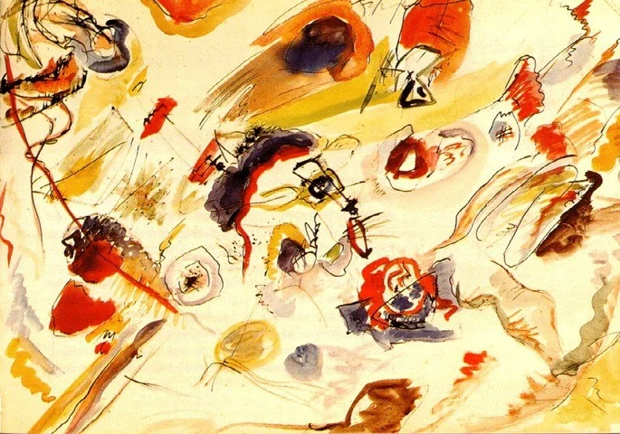

Primeira aquarela abstrata 1910-1913

Primeira aquarela abstrata- sem título – 1910-1913. Na década de 1910, Kandinsky (Russo / Alemão)desenvolveu seus primeiros estudos não-figurativos- sendo por isso considerado o primeiro pintor ocidental a produzir uma tela abstrata